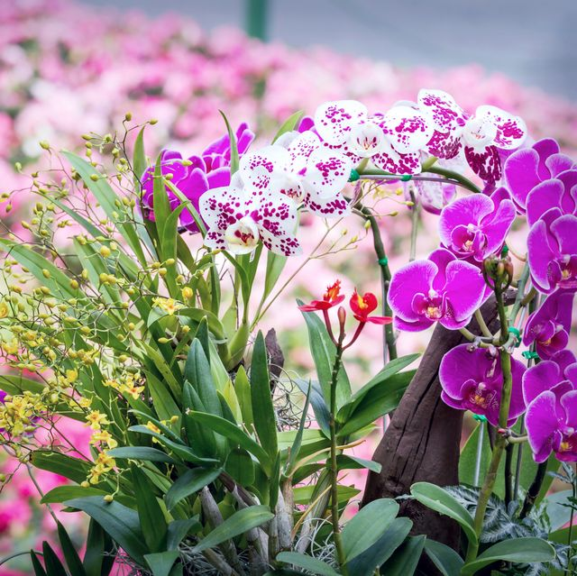
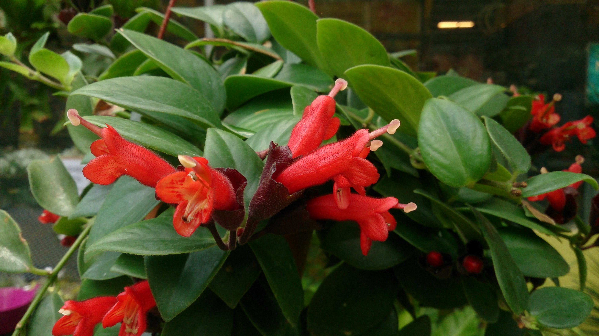
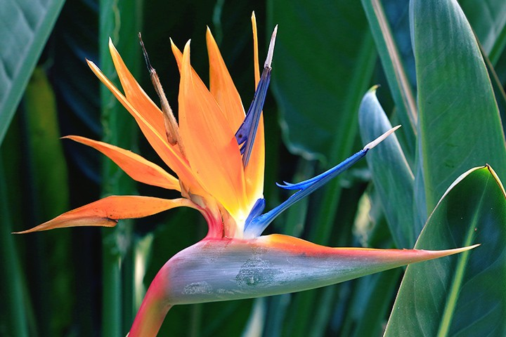
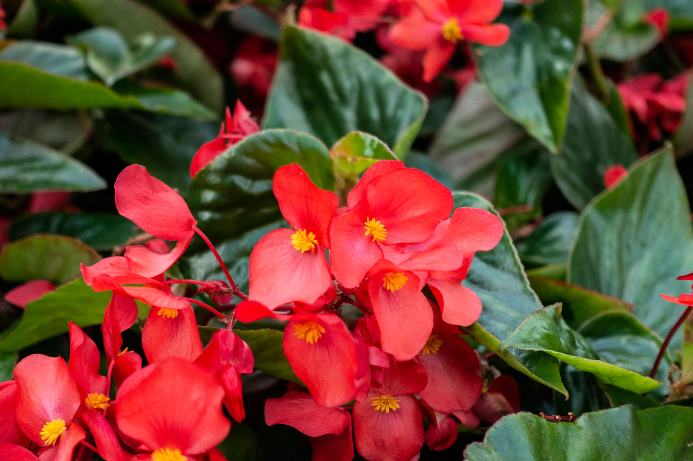
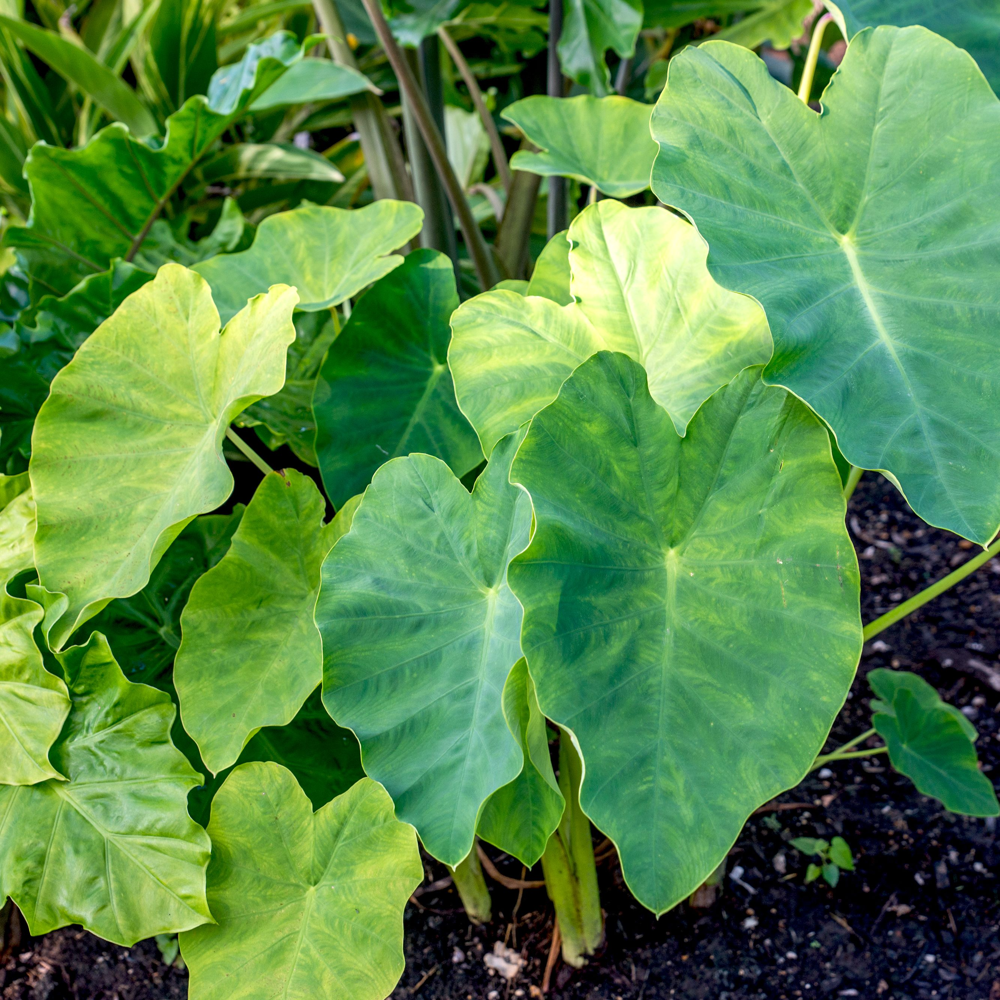

Early in the COVID-19 pandemic, as lockdowns put millions out of work and headlines forecast food shortages, anxious Americans picked up their rakes and spades. Many people were cut off from social gatherings. They were worried about bare shelves and contaminated grocery stores. And they needed something to occupy schoolchildren. In response, record numbers of people began cultivating coronavirus victory gardens. In a matter of weeks, seeds, seedlings, and fruit trees sold out online and in gardening centers. As it turns out, the impulse to garden is actually a great idea — whether or not you’re coping with a crisis — because gardening is one of the healthiest hobbies you can develop. Keep reading to learn about the many benefits of gardening, for you and your community.
Definition of Gardening
Gardening is the practice of growing and cultivating plants as part of horticulture. It involves an active participation in the growing of plants, and tends to be labor-intensive, which differentiates it from farming or forestry. Gardening is not only a fun way to pass the time, but it can also be used as a form of therapy to relieve stress from being confined at home
Gardening is considered by many people to be a relaxing activity. There are also many studies about the positive effects on mental and physical health in relation to gardening. Specifically, gardening is thought to increase self-esteem and reduce stress. As writer and former teacher Sarah Biddle notes, one's garden may become a "tiny oasis to relax and recharge one's batteries."
Essential Gardening Tools
Plants Suitable for Gardening
1. Orchid (Orchidaceae)
Long-lasting and vivid in colour, this oriental plant is well known for its stunning flowers. Orchids are also a symbol of fertility, elegance, and love, thus typically given as gifts to new parents.
Care:
Orchids need a little more attention than other plants, but with the right care, they can last for years. Even decades. It's vital to pay attention to the watering frequency, proper substrate, potting, and lighting for the plant's reblooming and growth.
Watering:
Moderately, usually every few days. Make sure to avoid overwatering as this plant is highly susceptible to root rot. If your home's environment is fairly dry or constantly air-conditioned, misting your orchid can be the perfect solution to restore the right humidity levels for it.
Lighting:
Lots of indirect light. A south- or east-facing window would be the best for your orchid. Tip: Prune stems with dead flowers to allow the plant to focus on the healthier parts instead.
Substrate:
Fast-draining substrates like a moss- or bark-based potting mix are your best bets. Your choice could affect the watering frequency. Tip: Ensure there's a good drainage system when potting your orchid.
2. Lipstick Plant (Aeschynanthus Radicans)
Usually kept as a hanging plant, the lipstick plant is a fun, vibrant little vine that loves to bloom its trademark flowers, when and if given the right conditions. Native to the humid climates of Java, the Malay Peninsula, and Borneo Island, the vine makes for a perfect indoor flowering plant!
Care:
Even though it is relatively a low maintenance plant, the right conditions are still needed to make sure your little lipstick plant thrives.
Watering:
Moderately. Wait till the top quarter of the soil has dried before watering it.
Lighting:
Bright lighting. Make sure that your lipstick plant is not placed in a shaded corner, and that it gets a maximum of two to three hours of direct sunshine. Such short intervals help the plant to produce flowers without getting its leaves burnt.
Substrate:
Well-draining humid soil. Potting mix combos such as sand and peat moss are perfect for this plant as it keeps its surroundings humid; and drains well, preventing root rot.
3. Bird of Paradise (Strelitzia Reginae)
Considered the queen of indoor plants, the bird of paradise adds a rich tropical flair to your home as its glossy, banana-shaped leaves fan out in all directions. Named after its flowers that bloom to resemble the head of a crane, it's a symbol of joy and freedom.
Care:
Relatively a hardy plant.
Watering:
Water it every other day, keeping the soil moist. Avoid overwatering it as the bird of paradise does not handle sitting in wet soil (or ‘wet feet’) well.
Lighting:
The bird of paradise is pretty fuss-free when it comes to lighting, be it low levels of light or direct sunlight. However, it flourishes best in a bright, sunny spot.
Substrate: Rich, well-draining soil that retains some moisture is the best for this plant.
4. Begonia (Begoniaceae)
The Begonia family is known for its vast variety of leaf shapes, sizes, and distinctive patterns. There are four main types: fibrous, tuberous, canes, and rhizomatous. Malaysia, however, is known to have about 52 native begonia species, with plenty more to discover.
Care:
For the intermediate plant parent. Begonias can be a tricky plant to please when it comes to watering and lighting conditions.
Watering:
Watering is the biggest challenge you will face with your begonia as they enjoy slightly damp soil and high humidity levels to grow. The best is to wait for the leaves to droop slightly, which indicates that the soil is dry. Water the soil directly, ensuring the leaves are dry at all times.
Lighting:
Begonias might need some finessing when it comes to light. If your begonia is in a bright spot and you notice some scorched leaves, move your plant to a shadier place.
Substrate:
Begonias do best in light fertile, well-draining soil as they are highly susceptible to root rot. Only repot your begonia once it is root-bound and even then, only in pots with good drainage.
5. Elephant Ear Plant (Colocasia)
Elephant ear plants are bold tropical plants that can grow to impressive sizes, making them best as an outdoor garden plant; although it is not uncommon to place them indoors too.
Care:
Do not expect your elephant ear plant to grow as massive indoors as it would outdoors—which might be a good thing as the leaves can span over two feet with stems reaching over five feet.
Watering:
Water every other day, keeping the soil moist. They do not like sitting in wet soil but some can be tolerant.
Lighting:
Bright lighting is the best for your indoor elephant ear plant but move it around if you notice any bleaching or singed leaves. Outdoors, the plant does well in partial shade.
Substrate:
Rich soil in a well-draining large pot is best for the elephant ear plant.